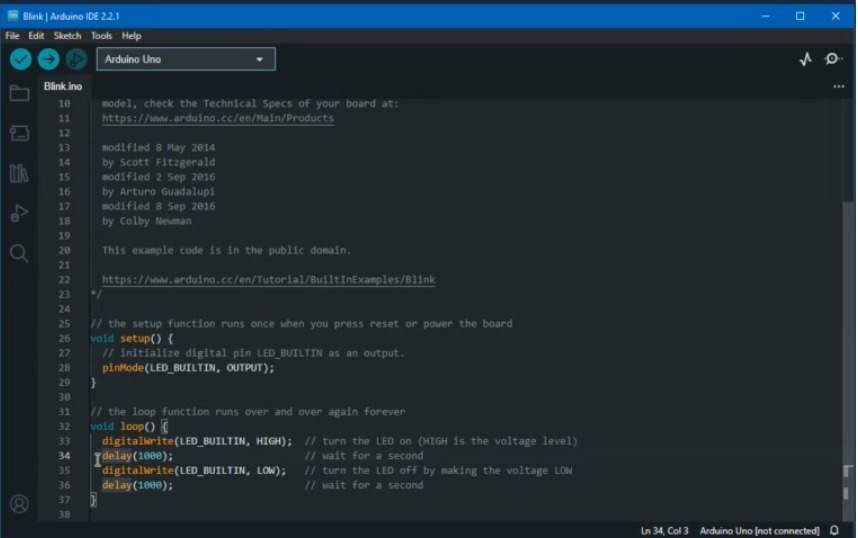

Semana 7

Clase presencial
Ya con nuestro proyecto escogido, teníamos que incorporar nuestro trabajo en un diagrama de flujo y diagrama de bloques. Que en mi caso lo he utilizado en otros trabajos, donde tenía que estructurar flujo de atención al cliente o experiencia de usuario en una página web, en este caso lo utilizamos para mostrar como se interactúa con nuestro producto. El profesor nos enseñó como se utilizan las figuras para representar ciertas acciones y simbologías. Dentro de la clase se hizo una nueva dinámica que consistía en que cada grupo se dividirá en 2, una de las partes realizaría el diagrama de bloques y lo expondría, mientras que, la otra parte daría feedback a los demás grupos. Los encargados del flujo de bloques fueron los chicos de mi grupo, donde estaban: Alexis, Kenneth y Renato, y las encargadas de los feedbacks fuimos Mafer, Alejandra y yo. Cada presentación que se realizaban de los grupos del salón, y nosotras aportamos ideas o debamos nuevas perspectivas de los productos, a nosotros nos sugirieron que tomáramos en cuenta al ser niños, tratáramos de hacer que la interacción fuera privada.

Clase virtual
Esta clase, aprendimos a instalar la plataforma de Arduino IDE, y aprendimos a codificar las funciones de Arduino y hacer pruebas antes de ejecutarlas de manera física, verificando que cada orden dada está bien ejecutada sé dándole check, esperando unos segundos si la plataforma detecte algún error, y luego al conectándolo con el Arduino físico. Esta clase aprendí conceptos importantes en Arduino como: La expresión "VOID SETUP" indica una ejecución singular, en contraste con "VOID LOOP", que implica una ejecución constante hasta que se interrumpe la alimentación. También nos introducimos en la programación orientada a objetos (POO), que consiste en crear un modelo del problema objetivo en programas para minimizar errores. POO representa una metodología de diseño y programación que organiza datos de manera efectiva.